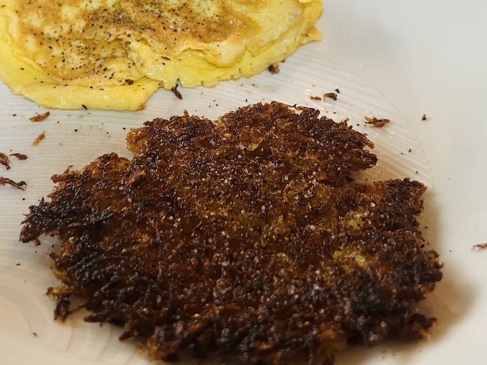

Hashbrown recipe
Ingredients
- 1 Potato
- 2½ tbsp Olive Oil
- 1 tbsp butter
- Pepper
- Salt
Instructions
- Peel the potato.
- Grate your potato into water.
- Strain your potato in water until all the starch is gone, you will know all the starch is gone when the water you are washing them in turns clear.
- Squeeze potato shreds until most of the water is out. Then sprinkle potato onto paper towels then wrap and squeeze until you think all water is out.
- Air dry for ten minutes
- Then using a 8 inch skillet cover with the olive oil and butter over medium low heat then make an even layer of of potato on the skillet cover and then cook for exactly five minutes with out removing the lid. Then flip the hasbrown and season with salt and pepper and cook for 2-3 minutes.
- Then serve hashbrown with an omelet or scrmbled eggs